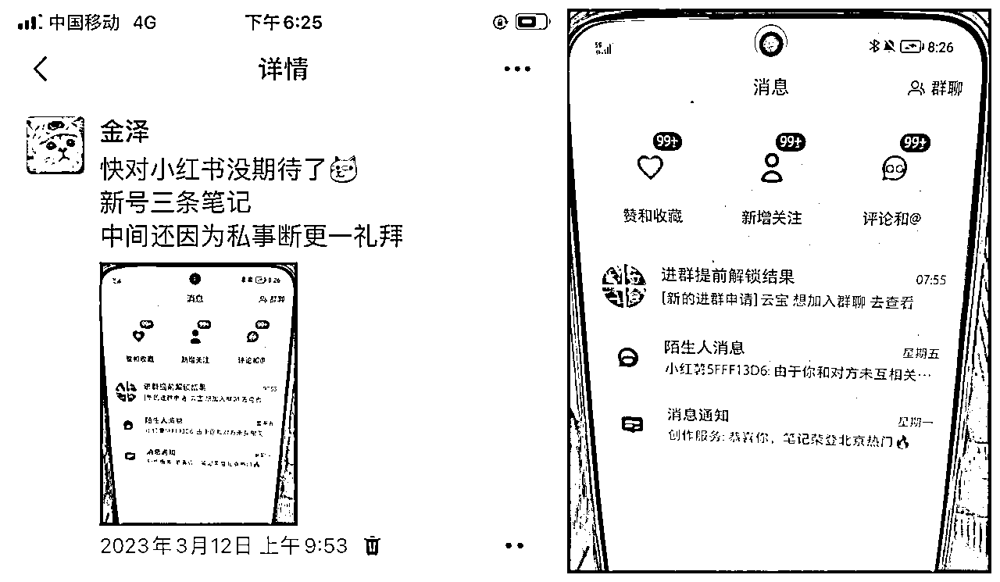
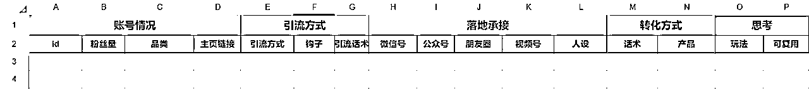
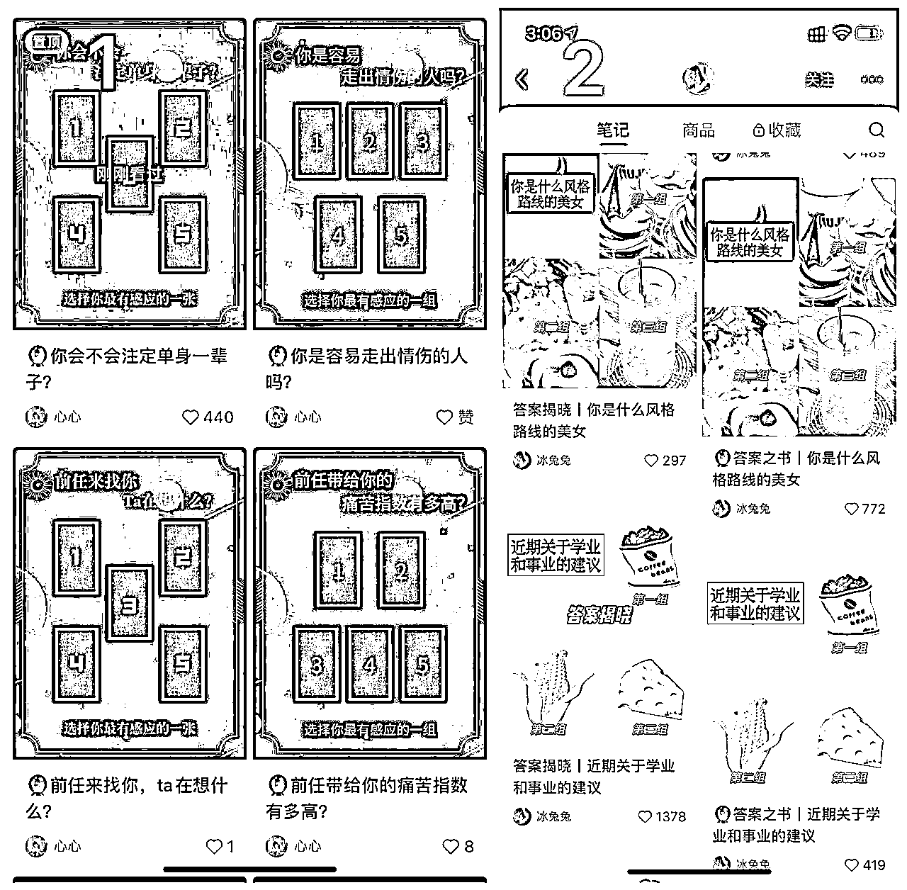
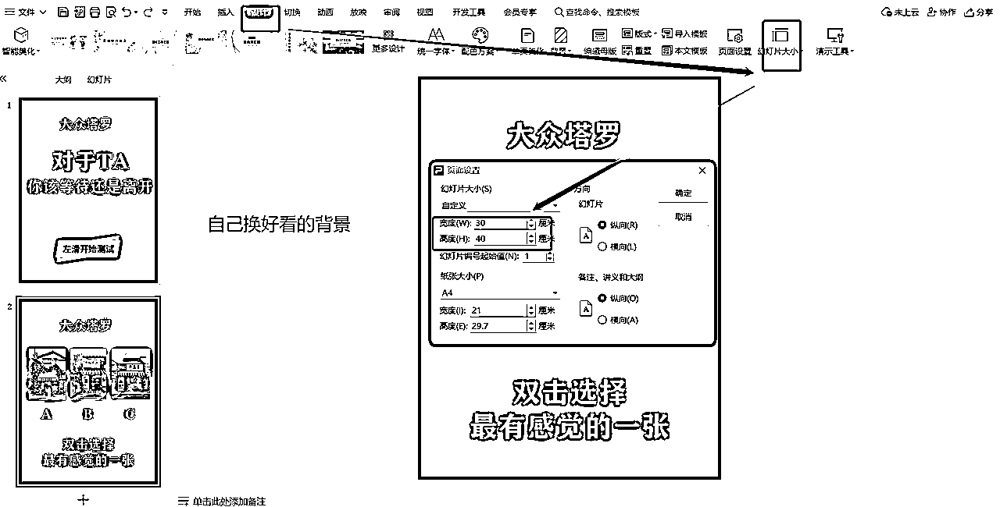
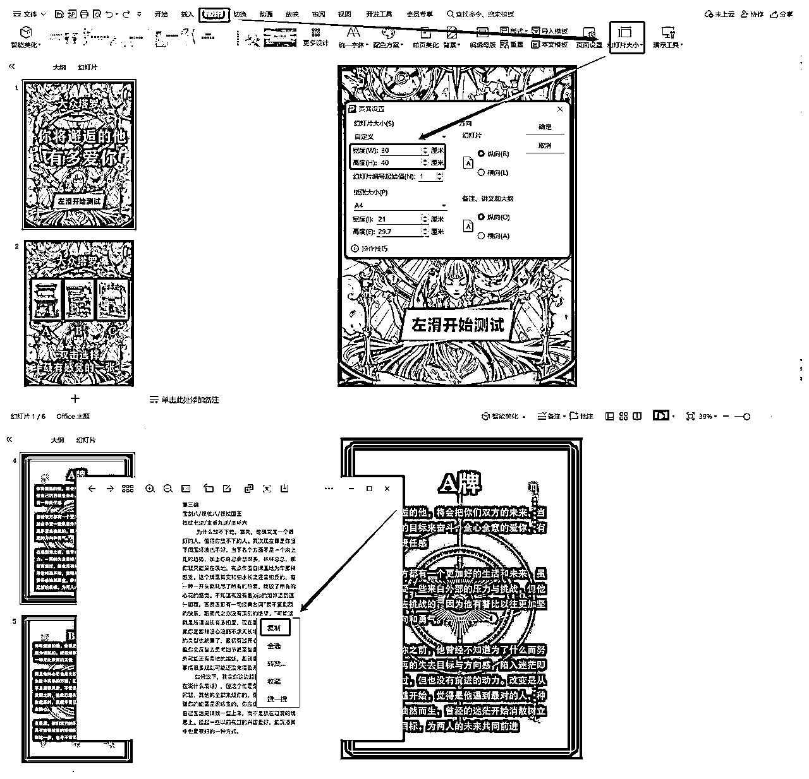
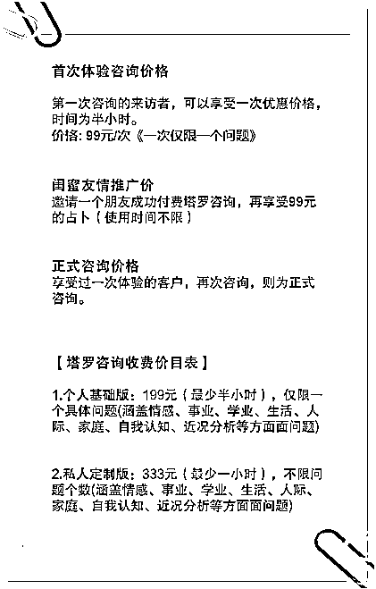

来源：https://wn6w5rrjx5.feishu.cn/docx/IGVTdJtkIo4Oyhx80EAcrT6pnJc
前段时间看到一个塔罗项目，觉得很有意思佛系测试了一波，不到1个月，单价99半小时的私占，成交12单。小红书群里有三四百人，引流到微信平均每5个人中，就有1-2个人成交。三个小时就能做好一周要发的内容

我本身是完全不懂塔罗的，后端交付找了一个会算塔罗的朋友帮忙。如果你正好会算塔罗，那这个项目可以时候是为你量身打造，如果你不会算塔罗，只需要变换一下交付形式，利用ai占卜。也可以完成交付
这里找对标不只是我看看他的账号是什么样子就可以了，而是要细致化的，从他的账号装修，到内容，到引流动作，到加上微信的话术，到产品结构。都要去拆解。目标10-20个。实际上等你拆完基本这个项目怎么做你都明白了。未来要做其他项目这个拆解方法也可以用。这里分享一下我做拆解的表格。

找对标账号的方法：
1.直接搜关键词【塔罗】一个一个进去看
2.下载【后羿采集器】pc软件，复制【塔罗】相关话题的链接，放到采集器里智能采集话题内的笔记，可以直接导出表格，排序一下，数据好的笔记一目了然
头像：温柔，可爱的女性人脸
名字：塔罗师xxx，xx塔罗等都可以，可以参考同行
简介：参考同行，账号前期不要在简介里写引流相关的内容。随便写句话就行
ps：头像昵称确认后，后面的微信头像昵称要和小红书同步。
目前小红书图文笔记号的塔罗内容有这几种形式：
1.拍真实的塔罗牌照片，然后抽牌解读
2.用风景图片，水晶，饰品等代替塔罗牌。然后解读
1.一篇笔记连抽牌，带解读一次性发出来
2.一个测试分两天，两条笔记发，第一天抽牌，第二天解读。

图1是真实牌照片（有正面有反面）且一次性连抽牌带解读都发了，图2是用图片代替牌，第一天发测试，第二天发解读，我选择了第二种，用其他图片代替真实牌面，第一天发测试，第二天发解读。原因有以下几种：
1.真实牌拍出来不好看，且解读要和牌面内容对应起来。在找素材和制作的时候都很费时间。我时间很少。
2.一个测评分两天发，用户测完没答案，会在评论区催答案，发数字，或者骂我。小红书推流机制中评论的分值很高。这样有利于获得更多流量。
由于我不会算塔罗，所以笔记内容都是抄来的。复制粘贴完全不做改动，亲测对流量没影响，用ppt完成全部作业，三小时可以做出来一个礼拜的素材。具体制作步骤如下：
1.打开wps，新建页面，设置页面大小，比例30:40
2.百度搜索【塔罗背景】找一张好看的图片作为背景，在上面加字，固定。做成模板固定复制内容进来即可
3.内容怎么复制：下载对标账号图片，发在微信里对话里，可以直接复制图片里的文字，不用识别


备注：
1.背景图片百度搜塔罗，会出来很多塔罗风格的图片，随意挑选即可。也可以用ai直接画一个出来，固定好一个风格就不要总换。会显得主页很乱。除非数据一直不好，再换不迟
2.我是挑选后把图片颜色加深了不少，原因是其他塔罗号基本用的都是浅色系。在小红书瀑布流的展示形式下，手机一屏展示出来的笔记，深色背景+亮色字体会显得格外突出。用户容易点进来
我是一次性做好一周的，pc端定时发布。亲测对流量没影响
我的引流动作主要在群里。用户进群后发钩子引导加微信。
路径：设置群聊曝光点--用户进群--发钩子--加微信
1.设置群聊在主页展示，等流量起来一点，可以在简介中加一句引导进群的话
2.群聊关联笔记，这个是进群最大入口。群名字很重要，很多同行直接写的【私占进群】我在拆对标的时候发现很多第二天发答案的笔记下面，很多评论在骂博主没后续，这是个刚需，用户昨晚测试后想立即看答案。所以我把群聊名字改成了【进群提前解锁答案】进群人数一下子暴增
3.评论区指定进群口令，一样的写上进群提前解锁答案。发笔记后顺手把第二天要发的答案发在群里就行，不碍事
钩子我找了一堆塔罗学习资料。在群里发。加微信领取。资料没有就去同行那里找，或者直接找基本塔罗书籍电子版
话术参考：
哈喽宝子，欢迎进群哟
因沟通限制不能直接发
想要【塔罗学习资料】或【私占】
的姐妹，+v领取即可
这里是微信号（单独发一个，方便复制）
备注：
1.只要是引流就一定有风险，发这个公告的号最好找个不用的小号来发，就算被封也是封小号，对大号没影响
2.私信一律不回复，这种被举报一报一个准
加好友就问：是来领资料还是私占，给他两个选择，如果是领资料，直接发就好了。如果是私占，问对方要测什么方向，然后直接发价格表即可。一般想做私占的这几句就直接成交了。暂时没有成交的后期靠朋友圈种草，再来占的比例很大。
我因为手机刷机，聊天记录都没了，就不贴上来了，你可以再拆同行的时候留意对方的话术，这里贴一个我之前的价格表给大家参考

朋友圈很重要，很多用户进来之后是先观察你的朋友圈再决定要不要为你付费，它相当于一个承接页，朋友圈发的好不好，直接决定你的转化率，除了参考同行的朋友圈外，发朋友圈还可以从以下这些角度
1.发用户对你的好评
2.发你对塔罗的见解
3.发你的生活日常，或情绪
4.发你在多么辛苦用功的学习塔罗等
这些内容可以让你显得又专业，又是一个活灵活现的真实的“人”，生财里面有很多关于怎么发朋友圈的帖子，也有朋友圈航海，我就不多说了，感兴趣的可以去看
1.咨询变现（精力有限，赚不了大钱，但可以产出宣传素材发朋友圈）
2.卖塔罗培训（这是赚大钱的，目前同行大多收费在600-3000之间）
3.网盘拉新佣金（资料存在夸克/百度网盘，提前找好拉新授权，新用户注册网盘有3块钱按左右的佣金，这属于顺带赚的）
4.卖能量水晶（几块钱的东西，一被加持就能卖几百）
这个项目我测试完就停了，一是自己不会算塔罗，也不喜欢这些情情爱爱的东西，二是还有其他业务要忙，顾不过来。如果你会算塔罗，这个事情确实是可以长期做下去的。
因为用户最终是沉淀在你的私域里面。不管外面平台怎么变，你私域是稳的，账号做起来同步抖音快手，未来有新平台继续同步。你的流量就不会断，如果有条件做塔罗培训卖课当然是最香的。
虽然没有姑娘永远18岁，但18岁的姑娘年年有，且这些姑娘到三十多岁仍然有一大批人依然喜欢算塔罗，我成交的那些人里面快有一半是已经参加工作好几年的。人群并不是我最初想像的只有学生。而是涵盖了18-30岁的女性人群
如果有条件卖课，是最好的。买几个同行的课程过来参考，用自己的语言再讲出来。从占普学习，到引流变现一条龙教学。还是很香的。在小红书搜塔罗教学。内容也非常多。需求还是很大的。